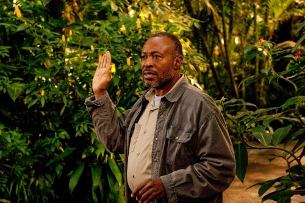
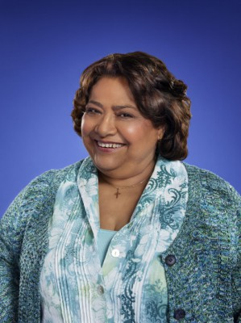
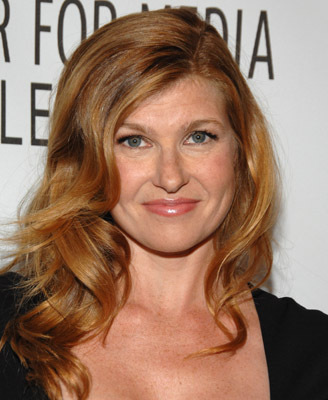
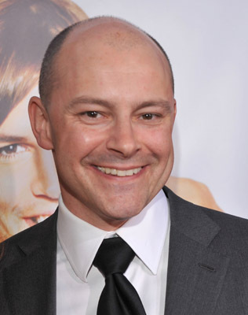
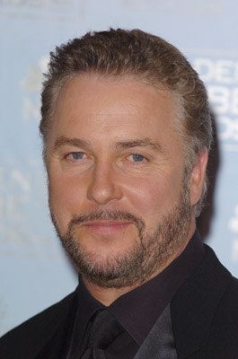
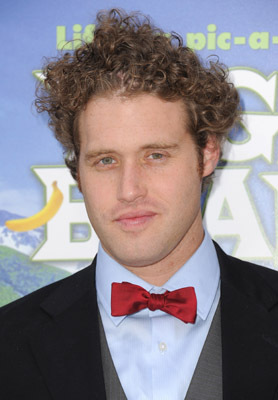
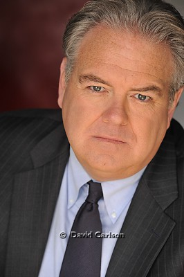
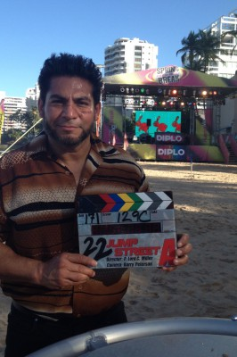

#452 Auf der Suche nach einem Freund fürs Ende der Welt
Alternativ: Seeking a Friend for the End of the World

 IMDB-Wertung: 6.7 / 10
IMDB-Wertung: 6.7 / 10  Metascore: 59
Metascore: 59 
Die Frage lautet: Was werden die Menschen tun, wie werden sie sich fühlen, wenn der Weltuntergang unmittelbar bevorsteht? Dodge klammert sich zunächst an seinen üblichen Alltag. Als er einen mit Verspätung fehlgeleiteten Brief von seiner alten Highschool-Flamme Olivia, der Liebe seines Lebens, erhält, steht für ihn fest, dass er sich sofort auf den Weg zu ihr machen muss. Den Brief hatte ihm seine Nachbarin Penny, die ihr Leben in vollen Zügen genießt und nichts allzu ernst nimmt, überreicht, aber jetzt beschließt, die letzten Tage vor dem Weltuntergang im Kreise ihrer Familie zu verbringen. Die beiden ungleichen Reisegefährten machen sich auf den Weg. Es beginnt ein Roadtrip voller bizarrer, tragischer und komischer Begegnungen, bei dem die beiden feststellen, dass sie viel gemein haben, und dass es manchmal nicht mehr braucht als einen guten Freund - und vielleicht ein kleines bisschen mehr... insbesondere, wenn die Welt untergeht.
Jahr: 2012
Dauer: 101 Minuten
FSK: 12
Land: USA Studio: Focus FeaturesTonspuren: DTS - ,
Untertitel: Deutsch,
Auflösung: 1080p (1920x816) Größe: 5007 MB
Genre: Abenteuer, Komödie, Drama, Liebe, Sci-Fi
Regisseur: Lorene Scafaria
Drehbuch: Lorene Scafaria
Soundtrack: Jonathan Sadoff, Rob Simonsen
Darsteller:
 Brad Morris als Radio Announcer
Brad Morris als Radio Announcer Steve Carell als Dodge
Steve Carell als Dodge- Nancy Carell als Linda
 Mark Moses als Anchorman
Mark Moses als Anchorman-  Roger Aaron Brown als Alfred
 Rob Huebel als Jeremy
Rob Huebel als Jeremy Keira Knightley als Penny
Keira Knightley als Penny Adam Brody als Owen
Adam Brody als Owen-  Tonita Castro als Elsa
- Leslie Murphy als Amy
-  Connie Britton als Diane
-  Rob Corddry als Warren
- Kasey Campbell als Danny
 Melanie Lynskey als Karen
Melanie Lynskey als Karen- Vince Grant als Man #1 / Chip
- Amy Schumer als Woman #1 / Lacey
 Patton Oswalt als Roache
Patton Oswalt als Roache- Marshall Manesh als Indian Man
-  William Petersen als Trucker
-  T.J. Miller als Chipper Host / Darcy
 Gillian Jacobs als Waitress / Katie
Gillian Jacobs als Waitress / Katie Bob Stephenson als Officer Wally Johnson
Bob Stephenson als Officer Wally Johnson- Rene Gube als Cell-Mate
-  Jim O'Heir als Cop #2
 Derek Luke als Speck
Derek Luke als Speck Martin Sheen als Frank
Martin Sheen als Frank- Tony Brown als Gay Party Guest , uncredited
- Lauren Crawford als Bikini Girl , uncredited
-  Eddie J. Fernandez als Carjacker , uncredited
- Laura Mann als Sarah , uncredited
- Prestin Persson als Bikini Girl , uncredited
- Lauren K. Solomon als Kissing Friendsy's Customer , uncredited
- Chris Spinelli als Cyclist , uncredited
- Steve Stafford als Airplane Pilot , uncredited
- Monica Staggs als Baptist Mother , uncredited
- Hannah Victoria Stock als Party Girl , uncredited
- Gary J. Wayton als Drunk Wrestler , uncredited
- Trisha Gorman als Crying Woman
- Aleister als Sorry
- Daniel Maurio als Toilet Guy
- Taber Cross als Waitress , uncredited
- Ami Haruna als Kissing Waitress , uncredited
- Jake Lucas als Gay Party Guest , uncredited
- Vivian Smallwood als Speck's Mother , uncredited
- Pat O. Smith als Friendsy's Customer , uncredited
- Jack Story als Steve-O , uncredited
Datei: X:\2012(A-F)\Auf der Suche nach einem Freund fürs Ende der Welt (2012, FSK12, 1920x816).mkv seit 25.02.2015
Festplatte: HD 2012(A-M)
 Es gibt insgesamt 102 Filme in der Gruppe '2012(A-F)'
Es gibt insgesamt 102 Filme in der Gruppe '2012(A-F)'